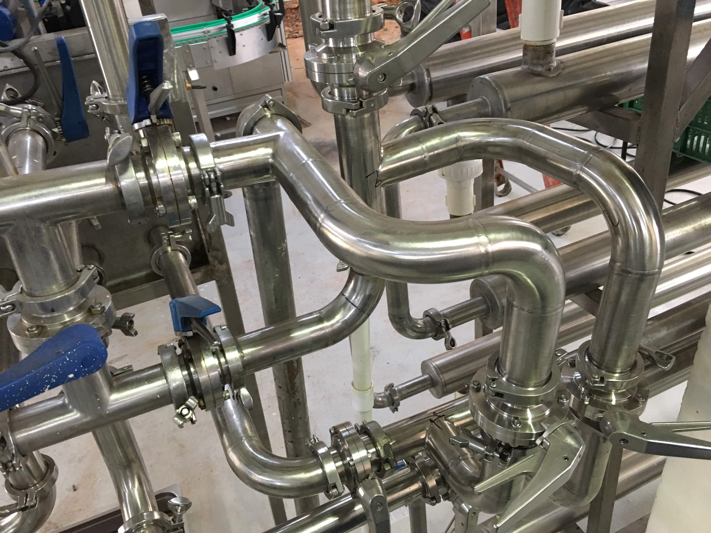
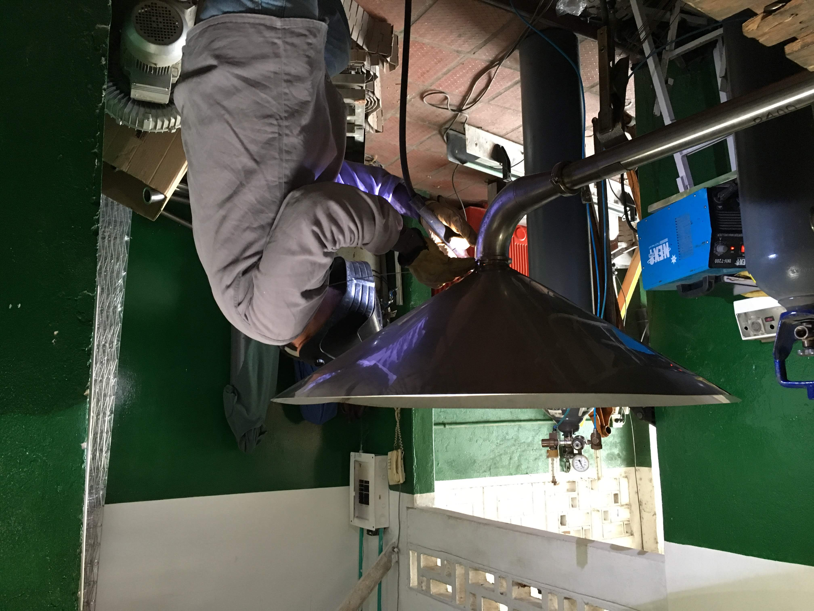
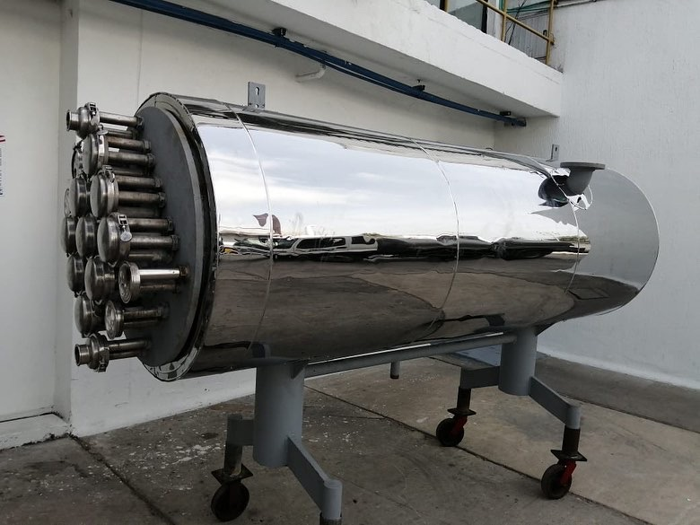
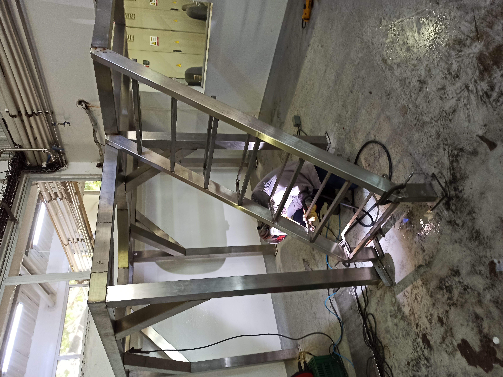

<!DOCTYPE html>
<html lang="en">
  <head>
    <meta charset="UTF-8">
    <meta http-equiv="X-UA-Compatible" content="IE=edge">
    <meta name="viewport" content="width=device-width, initial-scale=1.0">
    <script src="https://kit.fontawesome.com/eae2275d63.js" crossorigin="anonymous"> </script>
    <link rel="preconnect" href="https://fonts.googleapis.com">
    <link rel="preconnect" href="https://fonts.gstatic.com" crossorigin>
    <link rel="stylesheet" href="https://fonts.googleapis.com/css2?family=Roboto:wght@300;500;700&amp;display=swap">
    <title>TIGSYM-servicios</title>
    <link rel="stylesheet" href="../css/services.css">
  </head>
</html>
<body>
  <header class="header-container">
    <div class="logoHeader_TIG"></div>
    <nav class="navigation-header">
      <ul class="navigation-header__list"> 
        <li class="navigation-header__item"><a href="landing.html">Home  </a></li>
        <li class="navigation-header__item"><a href="quienesSomos.html">Quienes somos </a></li>
        <li class="navigation-header__item"><a href="services.html">Nuestros servicios </a></li>
        <li class="navigation-header__item"><a href="contactUs.html">Contactenos</a></li>
      </ul>
    </nav>
  </header>
  <main class="main-container">
    <section class="main-content"> 
      <h1 class="main-title">TIG SOLDADURAS Y MONTAJES S.A.S </h1>
      <p class="main-description">Asesoramos y elaboramos para nuestros clientes, montajes de lineas de tuebrias para suministro de producto, agua y vapor, para las maquinas, las cuales son soldadas por medio de soldadura TIG o SMAW segun lo requiera el cliente.</p>
    </section>
    <section class="service1-container">
      <div class="left-content"> 
        <h2>Fabricación y montaje de tuberias</h2>
        <p>Fabricación, reparación y montaje de tuberias de acero carbón, acero inoxidable Sch5 grado alimento y de distintos Sch para agua, vapor, condensado y demas servicios requeridos</p>
      </div>
      <div class="sidePhoto-img"> </div>
    </section>
    <section class="service2-container"> 
      <div class="right-content"> 
        <h2>Fabricación y reparación de tanques</h2>
        <p>Fabricación y reparación de tanques y tolvas para recopilación y/o almacenamiento productos alimenticios, agua o productos varios</p>
      </div>
      <div class="sidePhoto-img"> </div>
    </section>
    <section class="service3-container"> 
      <div class="left-content"> 
        <h2>Fabricacion y reparacion de intercambiadores de calor</h2>
        <p>Bajo especificaciones, planos y requerimientos del proceso</p>
      </div>
      <div class="sidePhoto-img"> </div>
    </section>
    <section class="service4-container"> 
      <div class="right-content"> 
        <h2>Carpintería metálica</h2>
        <p>Fabricacion de plataformas, mezzanines, barandas pasamanos, soportería para sistema de tuberías, tableros distribuidores.</p>
      </div>
      <div class="sidePhoto-img"> </div>
    </section>
  </main>
  <footer class="footer-info"> 
    <div class="footer-left"> 
      <ul class="footer-left-list"> 
        <li class="footer-left-item"><b>Dirección:</b> Carrera 26B No. 76-91. Barranquilla - Colombia</li>
        <li class="footer-left-item"><b>Email:</b> tigsoldadurasymotajessas@gmail.com</li>
        <li class="footer-left-item"><b>Tel:</b> +57 305 796 7287</li>
      </ul>
    </div>
    <div class="footer-right"> 
      <h3 class="footer-right-title">Redes sociales</h3>
      <ul class="footer-right-list">
        <li class="footer-right-item"> <a href="#"><i class="fab fa-facebook-square fa-3x"></i></a></li>
        <li class="footer-right-item"> <a href="#"><i class="fab fa-instagram-square fa-3x"></i></a></li>
      </ul>
    </div>
  </footer>
  <script src="../code.js"> </script>
</body>